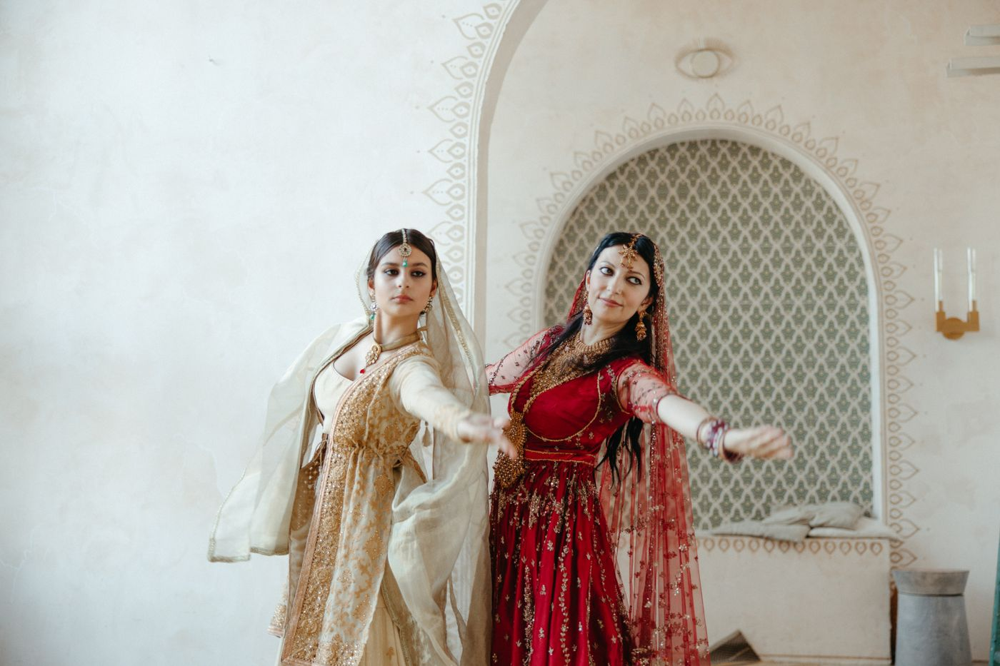

About Kavya
I teach people who swear they cannot dance.

Eleven years of other people's weddings
I trained in Bharatanatyam in Pune from the age of seven and spent my teens performing in school and college dance teams — the ones where the same six people do every show. In 2015 a neighbour asked me to “just teach the cousins something small” for her daughter's sangeet. Fourteen cousins, three rehearsals, one uncle hiding behind a pillar. It went beautifully, and I understood that night that a sangeet is not a dance show. It is a family telling its own story, in public, in costume, most of them terrified.
That is still the whole job. The steps are the easy part — I can teach anyone eight counts. The real work is the blocking sheet: who stands where, who enters from which wing, whose track starts on whose cue, and what we do when — not if — something changes on the day. Since 2019 I have run 58 sangeets across Pune, from Kothrud community halls to Baner lawns, and the oldest person I have put on a mark was 83.
I work alone, on purpose. The person who teaches your father his steps is the person standing at the DJ desk on the night, watching his mark. Nothing is handed over, so nothing is lost.
Two house rules, argued about every season
- Everybody rehearses — especially the uncles. There is always one uncle who says, “I don't need rehearsal, beta, I'll follow the others.” He is, without exception, the man who turns left when the row turns right. I no longer argue. I book him first, one-to-one, before the group sessions, and I give him the end mark where a wrong turn reads as enthusiasm. It has worked fifty-eight times.
- No lift enters a sangeet untested. A lift that worked in a video will not work in a lehenga, on a rented stage, at 9 pm, performed by a groom who has eaten nothing since breakfast. Any lift in my choreography must survive three rehearsals and one tired Tuesday-evening run before it is allowed near an audience. Most don't. The dip is a better photograph anyway, and nobody drops the bride in a dip.
How a booking runs
From first call to the finale, in order
| Stage | What happens | You give me | You get |
|---|---|---|---|
| 1 | The count call (30 min, free) | Your date, venue, rough number count | An honest yes/no on your calendar — the planner's answer, in person |
| 2 | Songs & casting | Each group's song choices and performer list | Clean track mixes — intros trimmed, volume matched, no sudden loud middles |
| 3 | Rehearsals | Two evenings a week per group, one room, everyone on time | Choreography taught in counts, filmed on your phones at the end of every session |
| 4 | The blocking sheet | Your stage size — I measure it myself at the venue visit | Marks taped, entries assigned, an understudy map for every number |
| 5 | Run-through week | One full evening, all groups, in show order | The running sheet, printed for the DJ, the MC and both mothers |
| 6 | The night | Nothing. Watch your family. | Me at the DJ desk, calling every cue |
When someone drops out on the day — and in 58 sangeets it has happened eleven times: flu, a delayed flight, a sprained ankle at the haldi — the understudy map from stage 4 is already drawn. I re-block in the green room, the formation closes one mark tighter, and the audience never knows. What I will not do is put an unrehearsed replacement on a mark: a smaller number done well beats a full number done nervously, every time.
Stage sizes. I work on anything from a 12 × 10 ft hall stage to a 32 ft lawn platform. Under 14 ft wide, circles become arcs and the finale becomes a wave — the choreography changes, the show does not shrink. If your venue's stage is smaller than your guest list's expectations, I will tell you at the count call, not at the run-through.
Bring me your most reluctant uncle. He is my favourite kind of student.
Dates for the November–February season are booked on a first-count-call basis. December weekends go first.
Book a date